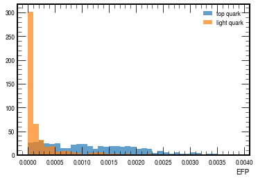
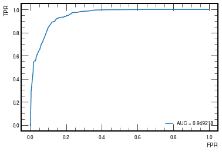

Tabular Data using Energy Flow Polynomials
Contents
Tabular Data using Energy Flow Polynomials#
In this lab, we will treat jets as tabular data using energy flow polynomials (EFPs)
!pip install jetnet
Requirement already satisfied: jetnet in /opt/hostedtoolcache/Python/3.7.13/x64/lib/python3.7/site-packages (0.1.2)
Requirement already satisfied: requests in /opt/hostedtoolcache/Python/3.7.13/x64/lib/python3.7/site-packages (from jetnet) (2.28.1)
Requirement already satisfied: tqdm in /opt/hostedtoolcache/Python/3.7.13/x64/lib/python3.7/site-packages (from jetnet) (4.64.0)
Requirement already satisfied: numpy>=1.21.0 in /opt/hostedtoolcache/Python/3.7.13/x64/lib/python3.7/site-packages (from jetnet) (1.21.6)
Requirement already satisfied: h5py>=3.0.0 in /opt/hostedtoolcache/Python/3.7.13/x64/lib/python3.7/site-packages (from jetnet) (3.7.0)
Requirement already satisfied: energyflow>=1.3.0 in /opt/hostedtoolcache/Python/3.7.13/x64/lib/python3.7/site-packages (from jetnet) (1.3.2)
Requirement already satisfied: awkward>=1.4.0 in /opt/hostedtoolcache/Python/3.7.13/x64/lib/python3.7/site-packages (from jetnet) (1.8.0)
Requirement already satisfied: coffea>=0.7.0 in /opt/hostedtoolcache/Python/3.7.13/x64/lib/python3.7/site-packages (from jetnet) (0.7.16)
Requirement already satisfied: scipy>=1.6.2 in /opt/hostedtoolcache/Python/3.7.13/x64/lib/python3.7/site-packages (from jetnet) (1.7.3)
Requirement already satisfied: torch>=1.8.0 in /opt/hostedtoolcache/Python/3.7.13/x64/lib/python3.7/site-packages (from jetnet) (1.12.0)
Requirement already satisfied: setuptools in /opt/hostedtoolcache/Python/3.7.13/x64/lib/python3.7/site-packages (from awkward>=1.4.0->jetnet) (63.2.0)
Requirement already satisfied: correctionlib>=2.0.0 in /opt/hostedtoolcache/Python/3.7.13/x64/lib/python3.7/site-packages (from coffea>=0.7.0->jetnet) (2.1.0)
Requirement already satisfied: pyarrow>=1.0.0 in /opt/hostedtoolcache/Python/3.7.13/x64/lib/python3.7/site-packages (from coffea>=0.7.0->jetnet) (8.0.0)
Requirement already satisfied: numba>=0.50.0 in /opt/hostedtoolcache/Python/3.7.13/x64/lib/python3.7/site-packages (from coffea>=0.7.0->jetnet) (0.56.0)
Requirement already satisfied: packaging in /opt/hostedtoolcache/Python/3.7.13/x64/lib/python3.7/site-packages (from coffea>=0.7.0->jetnet) (21.3)
Requirement already satisfied: lz4 in /opt/hostedtoolcache/Python/3.7.13/x64/lib/python3.7/site-packages (from coffea>=0.7.0->jetnet) (4.0.2)
Requirement already satisfied: uproot!=4.2.4,!=4.3.0,!=4.3.1,==4.*,>=4.1.6 in /opt/hostedtoolcache/Python/3.7.13/x64/lib/python3.7/site-packages (from coffea>=0.7.0->jetnet) (4.3.3)
Requirement already satisfied: hist>=2 in /opt/hostedtoolcache/Python/3.7.13/x64/lib/python3.7/site-packages (from coffea>=0.7.0->jetnet) (2.6.1)
Requirement already satisfied: pandas in /opt/hostedtoolcache/Python/3.7.13/x64/lib/python3.7/site-packages (from coffea>=0.7.0->jetnet) (1.3.5)
Requirement already satisfied: uproot3>=3.14.1 in /opt/hostedtoolcache/Python/3.7.13/x64/lib/python3.7/site-packages (from coffea>=0.7.0->jetnet) (3.14.4)
Requirement already satisfied: mplhep>=0.1.18 in /opt/hostedtoolcache/Python/3.7.13/x64/lib/python3.7/site-packages (from coffea>=0.7.0->jetnet) (0.3.26)
Requirement already satisfied: typing-extensions in /opt/hostedtoolcache/Python/3.7.13/x64/lib/python3.7/site-packages (from coffea>=0.7.0->jetnet) (4.3.0)
Requirement already satisfied: uproot3-methods>=0.10.0 in /opt/hostedtoolcache/Python/3.7.13/x64/lib/python3.7/site-packages (from coffea>=0.7.0->jetnet) (0.10.1)
Requirement already satisfied: matplotlib>=3 in /opt/hostedtoolcache/Python/3.7.13/x64/lib/python3.7/site-packages (from coffea>=0.7.0->jetnet) (3.5.2)
Requirement already satisfied: cachetools in /opt/hostedtoolcache/Python/3.7.13/x64/lib/python3.7/site-packages (from coffea>=0.7.0->jetnet) (5.2.0)
Requirement already satisfied: toml>=0.10.2 in /opt/hostedtoolcache/Python/3.7.13/x64/lib/python3.7/site-packages (from coffea>=0.7.0->jetnet) (0.10.2)
Requirement already satisfied: fsspec in /opt/hostedtoolcache/Python/3.7.13/x64/lib/python3.7/site-packages (from coffea>=0.7.0->jetnet) (2022.7.1)
Requirement already satisfied: cloudpickle>=1.2.3 in /opt/hostedtoolcache/Python/3.7.13/x64/lib/python3.7/site-packages (from coffea>=0.7.0->jetnet) (2.1.0)
Requirement already satisfied: six>=1.10.0 in /opt/hostedtoolcache/Python/3.7.13/x64/lib/python3.7/site-packages (from energyflow>=1.3.0->jetnet) (1.16.0)
Requirement already satisfied: wasserstein>=0.3.1 in /opt/hostedtoolcache/Python/3.7.13/x64/lib/python3.7/site-packages (from energyflow>=1.3.0->jetnet) (1.1.0)
Requirement already satisfied: idna<4,>=2.5 in /opt/hostedtoolcache/Python/3.7.13/x64/lib/python3.7/site-packages (from requests->jetnet) (3.3)
Requirement already satisfied: certifi>=2017.4.17 in /opt/hostedtoolcache/Python/3.7.13/x64/lib/python3.7/site-packages (from requests->jetnet) (2022.6.15)
Requirement already satisfied: charset-normalizer<3,>=2 in /opt/hostedtoolcache/Python/3.7.13/x64/lib/python3.7/site-packages (from requests->jetnet) (2.1.0)
Requirement already satisfied: urllib3<1.27,>=1.21.1 in /opt/hostedtoolcache/Python/3.7.13/x64/lib/python3.7/site-packages (from requests->jetnet) (1.26.11)
Requirement already satisfied: pydantic>=1.7.3 in /opt/hostedtoolcache/Python/3.7.13/x64/lib/python3.7/site-packages (from correctionlib>=2.0.0->coffea>=0.7.0->jetnet) (1.9.1)
Requirement already satisfied: rich in /opt/hostedtoolcache/Python/3.7.13/x64/lib/python3.7/site-packages (from correctionlib>=2.0.0->coffea>=0.7.0->jetnet) (12.5.1)
Requirement already satisfied: histoprint>=2.2.0 in /opt/hostedtoolcache/Python/3.7.13/x64/lib/python3.7/site-packages (from hist>=2->coffea>=0.7.0->jetnet) (2.4.0)
Requirement already satisfied: boost-histogram~=1.3.1 in /opt/hostedtoolcache/Python/3.7.13/x64/lib/python3.7/site-packages (from hist>=2->coffea>=0.7.0->jetnet) (1.3.1)
Requirement already satisfied: fonttools>=4.22.0 in /opt/hostedtoolcache/Python/3.7.13/x64/lib/python3.7/site-packages (from matplotlib>=3->coffea>=0.7.0->jetnet) (4.34.4)
Requirement already satisfied: kiwisolver>=1.0.1 in /opt/hostedtoolcache/Python/3.7.13/x64/lib/python3.7/site-packages (from matplotlib>=3->coffea>=0.7.0->jetnet) (1.4.4)
Requirement already satisfied: pyparsing>=2.2.1 in /opt/hostedtoolcache/Python/3.7.13/x64/lib/python3.7/site-packages (from matplotlib>=3->coffea>=0.7.0->jetnet) (3.0.9)
Requirement already satisfied: python-dateutil>=2.7 in /opt/hostedtoolcache/Python/3.7.13/x64/lib/python3.7/site-packages (from matplotlib>=3->coffea>=0.7.0->jetnet) (2.8.2)
Requirement already satisfied: pillow>=6.2.0 in /opt/hostedtoolcache/Python/3.7.13/x64/lib/python3.7/site-packages (from matplotlib>=3->coffea>=0.7.0->jetnet) (9.2.0)
Requirement already satisfied: cycler>=0.10 in /opt/hostedtoolcache/Python/3.7.13/x64/lib/python3.7/site-packages (from matplotlib>=3->coffea>=0.7.0->jetnet) (0.11.0)
Requirement already satisfied: uhi>=0.2.0 in /opt/hostedtoolcache/Python/3.7.13/x64/lib/python3.7/site-packages (from mplhep>=0.1.18->coffea>=0.7.0->jetnet) (0.3.1)
Requirement already satisfied: mplhep-data in /opt/hostedtoolcache/Python/3.7.13/x64/lib/python3.7/site-packages (from mplhep>=0.1.18->coffea>=0.7.0->jetnet) (0.0.3)
Requirement already satisfied: llvmlite<0.40,>=0.39.0dev0 in /opt/hostedtoolcache/Python/3.7.13/x64/lib/python3.7/site-packages (from numba>=0.50.0->coffea>=0.7.0->jetnet) (0.39.0)
Requirement already satisfied: importlib-metadata in /opt/hostedtoolcache/Python/3.7.13/x64/lib/python3.7/site-packages (from numba>=0.50.0->coffea>=0.7.0->jetnet) (4.12.0)
Requirement already satisfied: awkward0 in /opt/hostedtoolcache/Python/3.7.13/x64/lib/python3.7/site-packages (from uproot3>=3.14.1->coffea>=0.7.0->jetnet) (0.15.5)
Requirement already satisfied: wurlitzer>=2.0.0 in /opt/hostedtoolcache/Python/3.7.13/x64/lib/python3.7/site-packages (from wasserstein>=0.3.1->energyflow>=1.3.0->jetnet) (3.0.2)
Requirement already satisfied: pytz>=2017.3 in /opt/hostedtoolcache/Python/3.7.13/x64/lib/python3.7/site-packages (from pandas->coffea>=0.7.0->jetnet) (2022.1)
Requirement already satisfied: click>=7.0.0 in /opt/hostedtoolcache/Python/3.7.13/x64/lib/python3.7/site-packages (from histoprint>=2.2.0->hist>=2->coffea>=0.7.0->jetnet) (8.1.3)
Requirement already satisfied: zipp>=0.5 in /opt/hostedtoolcache/Python/3.7.13/x64/lib/python3.7/site-packages (from importlib-metadata->numba>=0.50.0->coffea>=0.7.0->jetnet) (3.8.1)
Requirement already satisfied: pygments<3.0.0,>=2.6.0 in /opt/hostedtoolcache/Python/3.7.13/x64/lib/python3.7/site-packages (from rich->correctionlib>=2.0.0->coffea>=0.7.0->jetnet) (2.12.0)
Requirement already satisfied: commonmark<0.10.0,>=0.9.0 in /opt/hostedtoolcache/Python/3.7.13/x64/lib/python3.7/site-packages (from rich->correctionlib>=2.0.0->coffea>=0.7.0->jetnet) (0.9.1)
Download dataset using JetNet library#
Download top quarks and light quark datasets using JetNet library
import jetnet
data_t = jetnet.datasets.JetNet(jet_type='t')
data_t.download_and_convert_to_pt(data_dir='./', jet_type='t')
data_q = jetnet.datasets.JetNet(jet_type='q')
data_q.download_and_convert_to_pt(data_dir='./', jet_type='q')
Downloading dataset
[..................................................] 1%
[█.................................................] 2%
[█.................................................] 4%
[██................................................] 5%
[███...............................................] 6%
[███...............................................] 7%
[████..............................................] 9%
[████..............................................] 10%
[█████.............................................] 11%
[██████............................................] 12%
[██████............................................] 14%
[███████...........................................] 15%
[███████...........................................] 16%
[████████..........................................] 17%
[█████████.........................................] 18%
[█████████.........................................] 20%
[██████████........................................] 21%
[███████████.......................................] 22%
[███████████.......................................] 23%
[████████████......................................] 25%
[████████████......................................] 26%
[█████████████.....................................] 27%
[██████████████....................................] 28%
[██████████████....................................] 29%
[███████████████...................................] 31%
[███████████████...................................] 32%
[████████████████..................................] 33%
[█████████████████.................................] 34%
[█████████████████.................................] 36%
[██████████████████................................] 37%
[███████████████████...............................] 38%
[███████████████████...............................] 39%
[████████████████████..............................] 41%
[████████████████████..............................] 42%
[█████████████████████.............................] 43%
[██████████████████████............................] 44%
[██████████████████████............................] 45%
[███████████████████████...........................] 47%
[███████████████████████...........................] 48%
[████████████████████████..........................] 49%
[█████████████████████████.........................] 50%
[█████████████████████████.........................] 52%
[██████████████████████████........................] 53%
[███████████████████████████.......................] 54%
[███████████████████████████.......................] 55%
[████████████████████████████......................] 56%
[████████████████████████████......................] 58%
[█████████████████████████████.....................] 59%
[██████████████████████████████....................] 60%
[██████████████████████████████....................] 61%
[███████████████████████████████...................] 63%
[███████████████████████████████...................] 64%
[████████████████████████████████..................] 65%
[█████████████████████████████████.................] 66%
[█████████████████████████████████.................] 68%
[██████████████████████████████████................] 69%
[██████████████████████████████████................] 70%
[███████████████████████████████████...............] 71%
[████████████████████████████████████..............] 72%
[████████████████████████████████████..............] 74%
[█████████████████████████████████████.............] 75%
[██████████████████████████████████████............] 76%
[██████████████████████████████████████............] 77%
[███████████████████████████████████████...........] 79%
[███████████████████████████████████████...........] 80%
[████████████████████████████████████████..........] 81%
[█████████████████████████████████████████.........] 82%
[█████████████████████████████████████████.........] 83%
[██████████████████████████████████████████........] 85%
[██████████████████████████████████████████........] 86%
[███████████████████████████████████████████.......] 87%
[████████████████████████████████████████████......] 88%
[████████████████████████████████████████████......] 90%
[█████████████████████████████████████████████.....] 91%
[██████████████████████████████████████████████....] 92%
[██████████████████████████████████████████████....] 93%
[███████████████████████████████████████████████...] 95%
[███████████████████████████████████████████████...] 96%
[████████████████████████████████████████████████..] 97%
[█████████████████████████████████████████████████.] 98%
[█████████████████████████████████████████████████.] 99%
[██████████████████████████████████████████████████] 100%
Downloading dataset
[..................................................] 1%
[█.................................................] 3%
[█.................................................] 4%
[██................................................] 5%
[███...............................................] 6%
[███...............................................] 8%
[████..............................................] 9%
[█████.............................................] 10%
[█████.............................................] 12%
[██████............................................] 13%
[███████...........................................] 14%
[███████...........................................] 15%
[████████..........................................] 17%
[████████..........................................] 18%
[█████████.........................................] 19%
[██████████........................................] 20%
[██████████........................................] 22%
[███████████.......................................] 23%
[████████████......................................] 24%
[████████████......................................] 26%
[█████████████.....................................] 27%
[██████████████....................................] 28%
[██████████████....................................] 29%
[███████████████...................................] 31%
[███████████████...................................] 32%
[████████████████..................................] 33%
[█████████████████.................................] 35%
[█████████████████.................................] 36%
[██████████████████................................] 37%
[███████████████████...............................] 38%
[███████████████████...............................] 40%
[████████████████████..............................] 41%
[█████████████████████.............................] 42%
[█████████████████████.............................] 44%
[██████████████████████............................] 45%
[███████████████████████...........................] 46%
[███████████████████████...........................] 47%
[████████████████████████..........................] 49%
[████████████████████████..........................] 50%
[█████████████████████████.........................] 51%
[██████████████████████████........................] 52%
[██████████████████████████........................] 54%
[███████████████████████████.......................] 55%
[████████████████████████████......................] 56%
[████████████████████████████......................] 58%
[█████████████████████████████.....................] 59%
[██████████████████████████████....................] 60%
[██████████████████████████████....................] 61%
[███████████████████████████████...................] 63%
[███████████████████████████████...................] 64%
[████████████████████████████████..................] 65%
[█████████████████████████████████.................] 67%
[█████████████████████████████████.................] 68%
[██████████████████████████████████................] 69%
[███████████████████████████████████...............] 70%
[███████████████████████████████████...............] 72%
[████████████████████████████████████..............] 73%
[█████████████████████████████████████.............] 74%
[█████████████████████████████████████.............] 76%
[██████████████████████████████████████............] 77%
[███████████████████████████████████████...........] 78%
[███████████████████████████████████████...........] 79%
[████████████████████████████████████████..........] 81%
[████████████████████████████████████████..........] 82%
[█████████████████████████████████████████.........] 83%
[██████████████████████████████████████████........] 84%
[██████████████████████████████████████████........] 86%
[███████████████████████████████████████████.......] 87%
[████████████████████████████████████████████......] 88%
[████████████████████████████████████████████......] 90%
[█████████████████████████████████████████████.....] 91%
[██████████████████████████████████████████████....] 92%
[██████████████████████████████████████████████....] 93%
[███████████████████████████████████████████████...] 95%
[███████████████████████████████████████████████...] 96%
[████████████████████████████████████████████████..] 97%
[█████████████████████████████████████████████████.] 99%
[█████████████████████████████████████████████████.] 100%
[██████████████████████████████████████████████████] 100%
import torch
n = 2000
data_t_pt = torch.load("t.pt")[:n]
data_q_pt = torch.load("q.pt")[:n]
X_jets_pt = torch.cat([data_t_pt, data_q_pt])
y_pt = torch.cat([torch.ones(n), torch.zeros(n)])
y_np = y_pt.numpy()
Calculate Energy Flow Polynomials#
X_efps_np = jetnet.utils.efps(X_jets_pt[:,:,:3].numpy(), efpset_args=[("n==", 4), ("d==", 4), ("p==", 1)])
Split data#
from sklearn.model_selection import train_test_split
X_train, X_test, y_train, y_test = train_test_split(
X_efps_np, y_np, stratify=y_np, random_state=42, test_size=0.25
)
Plot EFPs#
import matplotlib.pyplot as plt
import mplhep as hep
hep.style.use(hep.style.ROOT)
import numpy as np
plt.figure()
plt.hist(X_test[:,0], weights=y_test, bins=np.arange(0, 0.004, 0.0001), alpha=0.7, label="top quark")
plt.hist(X_test[:,0], weights=(1-y_test), bins=np.arange(0, 0.004, 0.0001), alpha=0.7, label="light quark")
plt.xlabel("EFP")
plt.legend()
plt.show()

Train Boosted Decision Tree#
!pip install xgboost
Collecting xgboost
Downloading xgboost-1.6.1-py3-none-manylinux2014_x86_64.whl (192.9 MB)
?25l ━━━━━━━━━━━━━━━━━━━━━━━━━━━━━━━━━━━━━━━━ 0.0/192.9 MB ? eta -:--:--
━━━━━━━━━━━━━━━━━━━━━━━━━━━━━━━━━━━━━━━━ 0.2/192.9 MB 6.1 MB/s eta 0:00:32
━━━━━━━━━━━━━━━━━━━━━━━━━━━━━━━━━━━━━━━━ 1.7/192.9 MB 24.4 MB/s eta 0:00:08
━╺━━━━━━━━━━━━━━━━━━━━━━━━━━━━━━━━━━━━━━ 6.3/192.9 MB 60.1 MB/s eta 0:00:04
━━╺━━━━━━━━━━━━━━━━━━━━━━━━━━━━━━━━━━━ 11.8/192.9 MB 141.9 MB/s eta 0:00:02
━━━╸━━━━━━━━━━━━━━━━━━━━━━━━━━━━━━━━━━ 18.0/192.9 MB 170.4 MB/s eta 0:00:02
━━━━╸━━━━━━━━━━━━━━━━━━━━━━━━━━━━━━━━━ 24.2/192.9 MB 176.7 MB/s eta 0:00:01
━━━━━━╺━━━━━━━━━━━━━━━━━━━━━━━━━━━━━━━ 30.5/192.9 MB 176.6 MB/s eta 0:00:01
━━━━━━━╺━━━━━━━━━━━━━━━━━━━━━━━━━━━━━━ 36.7/192.9 MB 176.6 MB/s eta 0:00:01
━━━━━━━━╺━━━━━━━━━━━━━━━━━━━━━━━━━━━━━ 42.9/192.9 MB 175.5 MB/s eta 0:00:01
━━━━━━━━━╸━━━━━━━━━━━━━━━━━━━━━━━━━━━━ 49.1/192.9 MB 174.4 MB/s eta 0:00:01
━━━━━━━━━━╸━━━━━━━━━━━━━━━━━━━━━━━━━━━ 55.3/192.9 MB 176.0 MB/s eta 0:00:01
━━━━━━━━━━━━╺━━━━━━━━━━━━━━━━━━━━━━━━━ 61.5/192.9 MB 176.8 MB/s eta 0:00:01
━━━━━━━━━━━━━╺━━━━━━━━━━━━━━━━━━━━━━━━ 67.8/192.9 MB 176.6 MB/s eta 0:00:01
━━━━━━━━━━━━━━╸━━━━━━━━━━━━━━━━━━━━━━━ 74.0/192.9 MB 175.9 MB/s eta 0:00:01
━━━━━━━━━━━━━━━╸━━━━━━━━━━━━━━━━━━━━━━ 80.7/192.9 MB 176.1 MB/s eta 0:00:01
━━━━━━━━━━━━━━━━━╺━━━━━━━━━━━━━━━━━━━━ 87.0/192.9 MB 177.5 MB/s eta 0:00:01
━━━━━━━━━━━━━━━━━━╺━━━━━━━━━━━━━━━━━━━ 93.2/192.9 MB 175.5 MB/s eta 0:00:01
━━━━━━━━━━━━━━━━━━━╸━━━━━━━━━━━━━━━━━━ 99.4/192.9 MB 175.7 MB/s eta 0:00:01
━━━━━━━━━━━━━━━━━━━━╺━━━━━━━━━━━━━━━━ 105.6/192.9 MB 175.9 MB/s eta 0:00:01
━━━━━━━━━━━━━━━━━━━━━╺━━━━━━━━━━━━━━━ 111.9/192.9 MB 175.9 MB/s eta 0:00:01
━━━━━━━━━━━━━━━━━━━━━━╸━━━━━━━━━━━━━━ 118.1/192.9 MB 176.5 MB/s eta 0:00:01
━━━━━━━━━━━━━━━━━━━━━━━╸━━━━━━━━━━━━━ 124.3/192.9 MB 175.6 MB/s eta 0:00:01
━━━━━━━━━━━━━━━━━━━━━━━━━╺━━━━━━━━━━━ 130.5/192.9 MB 175.6 MB/s eta 0:00:01
━━━━━━━━━━━━━━━━━━━━━━━━━━╺━━━━━━━━━━ 136.7/192.9 MB 175.6 MB/s eta 0:00:01
━━━━━━━━━━━━━━━━━━━━━━━━━━━╺━━━━━━━━━ 142.9/192.9 MB 175.1 MB/s eta 0:00:01
━━━━━━━━━━━━━━━━━━━━━━━━━━━━╸━━━━━━━━ 149.1/192.9 MB 175.7 MB/s eta 0:00:01
━━━━━━━━━━━━━━━━━━━━━━━━━━━━━╸━━━━━━━ 155.2/192.9 MB 175.2 MB/s eta 0:00:01
━━━━━━━━━━━━━━━━━━━━━━━━━━━━━━╸━━━━━━ 161.4/192.9 MB 174.3 MB/s eta 0:00:01
━━━━━━━━━━━━━━━━━━━━━━━━━━━━━━━╸━━━━━ 166.5/192.9 MB 155.2 MB/s eta 0:00:01
━━━━━━━━━━━━━━━━━━━━━━━━━━━━━━━━╸━━━━ 171.7/192.9 MB 148.9 MB/s eta 0:00:01
━━━━━━━━━━━━━━━━━━━━━━━━━━━━━━━━━╸━━━ 176.7/192.9 MB 147.2 MB/s eta 0:00:01
━━━━━━━━━━━━━━━━━━━━━━━━━━━━━━━━━━╸━━ 181.9/192.9 MB 147.9 MB/s eta 0:00:01
━━━━━━━━━━━━━━━━━━━━━━━━━━━━━━━━━━━╸━ 187.1/192.9 MB 148.3 MB/s eta 0:00:01
━━━━━━━━━━━━━━━━━━━━━━━━━━━━━━━━━━━━╸ 192.3/192.9 MB 148.6 MB/s eta 0:00:01
━━━━━━━━━━━━━━━━━━━━━━━━━━━━━━━━━━━━╸ 192.9/192.9 MB 143.5 MB/s eta 0:00:01
━━━━━━━━━━━━━━━━━━━━━━━━━━━━━━━━━━━━╸ 192.9/192.9 MB 143.5 MB/s eta 0:00:01
━━━━━━━━━━━━━━━━━━━━━━━━━━━━━━━━━━━━╸ 192.9/192.9 MB 143.5 MB/s eta 0:00:01
━━━━━━━━━━━━━━━━━━━━━━━━━━━━━━━━━━━━╸ 192.9/192.9 MB 143.5 MB/s eta 0:00:01
━━━━━━━━━━━━━━━━━━━━━━━━━━━━━━━━━━━━╸ 192.9/192.9 MB 143.5 MB/s eta 0:00:01
━━━━━━━━━━━━━━━━━━━━━━━━━━━━━━━━━━━━╸ 192.9/192.9 MB 143.5 MB/s eta 0:00:01
━━━━━━━━━━━━━━━━━━━━━━━━━━━━━━━━━━━━╸ 192.9/192.9 MB 143.5 MB/s eta 0:00:01
━━━━━━━━━━━━━━━━━━━━━━━━━━━━━━━━━━━━╸ 192.9/192.9 MB 143.5 MB/s eta 0:00:01
━━━━━━━━━━━━━━━━━━━━━━━━━━━━━━━━━━━━╸ 192.9/192.9 MB 143.5 MB/s eta 0:00:01
━━━━━━━━━━━━━━━━━━━━━━━━━━━━━━━━━━━━╸ 192.9/192.9 MB 143.5 MB/s eta 0:00:01
━━━━━━━━━━━━━━━━━━━━━━━━━━━━━━━━━━━━╸ 192.9/192.9 MB 143.5 MB/s eta 0:00:01
━━━━━━━━━━━━━━━━━━━━━━━━━━━━━━━━━━━━╸ 192.9/192.9 MB 143.5 MB/s eta 0:00:01
━━━━━━━━━━━━━━━━━━━━━━━━━━━━━━━━━━━━╸ 192.9/192.9 MB 143.5 MB/s eta 0:00:01
━━━━━━━━━━━━━━━━━━━━━━━━━━━━━━━━━━━━╸ 192.9/192.9 MB 143.5 MB/s eta 0:00:01
━━━━━━━━━━━━━━━━━━━━━━━━━━━━━━━━━━━━╸ 192.9/192.9 MB 143.5 MB/s eta 0:00:01
━━━━━━━━━━━━━━━━━━━━━━━━━━━━━━━━━━━━╸ 192.9/192.9 MB 143.5 MB/s eta 0:00:01
━━━━━━━━━━━━━━━━━━━━━━━━━━━━━━━━━━━━╸ 192.9/192.9 MB 143.5 MB/s eta 0:00:01
━━━━━━━━━━━━━━━━━━━━━━━━━━━━━━━━━━━━╸ 192.9/192.9 MB 143.5 MB/s eta 0:00:01
━━━━━━━━━━━━━━━━━━━━━━━━━━━━━━━━━━━━╸ 192.9/192.9 MB 143.5 MB/s eta 0:00:01
━━━━━━━━━━━━━━━━━━━━━━━━━━━━━━━━━━━━╸ 192.9/192.9 MB 143.5 MB/s eta 0:00:01
━━━━━━━━━━━━━━━━━━━━━━━━━━━━━━━━━━━━╸ 192.9/192.9 MB 143.5 MB/s eta 0:00:01
━━━━━━━━━━━━━━━━━━━━━━━━━━━━━━━━━━━━╸ 192.9/192.9 MB 143.5 MB/s eta 0:00:01
━━━━━━━━━━━━━━━━━━━━━━━━━━━━━━━━━━━━╸ 192.9/192.9 MB 143.5 MB/s eta 0:00:01
━━━━━━━━━━━━━━━━━━━━━━━━━━━━━━━━━━━━╸ 192.9/192.9 MB 143.5 MB/s eta 0:00:01
━━━━━━━━━━━━━━━━━━━━━━━━━━━━━━━━━━━━╸ 192.9/192.9 MB 143.5 MB/s eta 0:00:01
━━━━━━━━━━━━━━━━━━━━━━━━━━━━━━━━━━━━╸ 192.9/192.9 MB 143.5 MB/s eta 0:00:01
━━━━━━━━━━━━━━━━━━━━━━━━━━━━━━━━━━━━╸ 192.9/192.9 MB 143.5 MB/s eta 0:00:01
━━━━━━━━━━━━━━━━━━━━━━━━━━━━━━━━━━━━╸ 192.9/192.9 MB 143.5 MB/s eta 0:00:01
━━━━━━━━━━━━━━━━━━━━━━━━━━━━━━━━━━━━╸ 192.9/192.9 MB 143.5 MB/s eta 0:00:01
━━━━━━━━━━━━━━━━━━━━━━━━━━━━━━━━━━━━╸ 192.9/192.9 MB 143.5 MB/s eta 0:00:01
━━━━━━━━━━━━━━━━━━━━━━━━━━━━━━━━━━━━╸ 192.9/192.9 MB 143.5 MB/s eta 0:00:01
━━━━━━━━━━━━━━━━━━━━━━━━━━━━━━━━━━━━╸ 192.9/192.9 MB 143.5 MB/s eta 0:00:01
━━━━━━━━━━━━━━━━━━━━━━━━━━━━━━━━━━━━╸ 192.9/192.9 MB 143.5 MB/s eta 0:00:01
━━━━━━━━━━━━━━━━━━━━━━━━━━━━━━━━━━━━╸ 192.9/192.9 MB 143.5 MB/s eta 0:00:01
━━━━━━━━━━━━━━━━━━━━━━━━━━━━━━━━━━━━╸ 192.9/192.9 MB 143.5 MB/s eta 0:00:01
━━━━━━━━━━━━━━━━━━━━━━━━━━━━━━━━━━━━╸ 192.9/192.9 MB 143.5 MB/s eta 0:00:01
━━━━━━━━━━━━━━━━━━━━━━━━━━━━━━━━━━━━╸ 192.9/192.9 MB 143.5 MB/s eta 0:00:01
━━━━━━━━━━━━━━━━━━━━━━━━━━━━━━━━━━━━╸ 192.9/192.9 MB 143.5 MB/s eta 0:00:01
━━━━━━━━━━━━━━━━━━━━━━━━━━━━━━━━━━━━━━━ 192.9/192.9 MB 5.9 MB/s eta 0:00:00
?25h
Requirement already satisfied: numpy in /opt/hostedtoolcache/Python/3.7.13/x64/lib/python3.7/site-packages (from xgboost) (1.21.6)
Requirement already satisfied: scipy in /opt/hostedtoolcache/Python/3.7.13/x64/lib/python3.7/site-packages (from xgboost) (1.7.3)
Installing collected packages: xgboost
Successfully installed xgboost-1.6.1
import xgboost as xgb
clf = xgb.XGBClassifier(max_depth=3,
n_estimators=10,
n_jobs=-1)
clf.fit(X_train, y_train)
XGBClassifier(base_score=0.5, booster='gbtree', callbacks=None,
colsample_bylevel=1, colsample_bynode=1, colsample_bytree=1,
early_stopping_rounds=None, enable_categorical=False,
eval_metric=None, gamma=0, gpu_id=-1, grow_policy='depthwise',
importance_type=None, interaction_constraints='',
learning_rate=0.300000012, max_bin=256, max_cat_to_onehot=4,
max_delta_step=0, max_depth=3, max_leaves=0, min_child_weight=1,
missing=nan, monotone_constraints='()', n_estimators=10,
n_jobs=-1, num_parallel_tree=1, predictor='auto', random_state=0,
reg_alpha=0, reg_lambda=1, ...)
Evaluate BDT Performance#
from sklearn.metrics import roc_curve, auc
y_xgb = clf.predict_proba(X_test)[:,1]
fpr, tpr, thresholds = roc_curve(y_test, y_xgb)
auc_t = auc(fpr, tpr)
plt.figure()
plt.plot(fpr, tpr, label='AUC = {}'.format(auc_t))
plt.legend()
plt.xlabel("FPR")
plt.ylabel("TPR")
plt.show()
